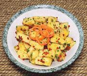

|
Pineapple ChowTrinidad | ||||
| Makes: Effort: Sched: DoAhead: |
1 # ** 1-1/3 hrs Yes |
An interesting appetizer with sweetness, tang, and sharpness. Chows (Chow-chows) are usually pickled, but Pineapple is already self pickled. | |||
|
|
1 1 ar 2 1/2 |
# cl T t |
Pineapple Garlic Chilis, red (1) Cilantro Salt |
Make: - (20 min + 1 hr marinate)
|